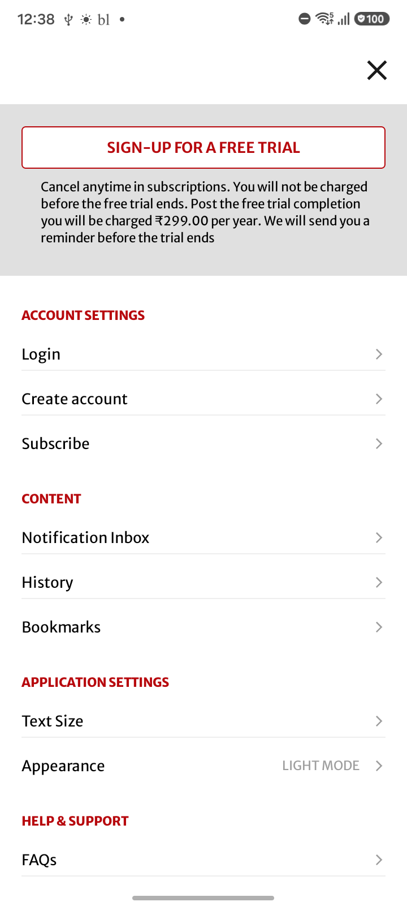

SC_22 — Appearance theme validation

Image: SC_22_Account_Settings_Page.png
Confidence: High Severity: LOW
Reason: All expected UI components are present and there are no visible defects.

Image: SC_22_Appearance.png
Confidence: High Severity: LOW
Reason: All expected UI components are present and correctly aligned. No UI defects are visible.
Image: SC_22_Appearance_Dark_Theme.png
Confidence: High Severity: LOW
Reason: All expected UI components for the appearance/theme selection are present. No visual defects or layout issues are visible.

Image: SC_22_Appearance_Dark_Theme_Home_Page.png
Confidence: High Severity: HIGH
Reason: Placeholders are still visible instead of fully rendered content, indicating incomplete rendering or loading defect.
Issues:
- Placeholder still visible
- Incomplete screen rendering
Jira Title: Placeholders visible instead of content on Home screen
Jira Description: The Home screen displays loading placeholders rather than fully rendered article cards, indicating that the actual content has not properly loaded or rendered.

Image: SC_22_Appearance_Light_Theme.png
Confidence: High Severity: LOW
Reason: All expected UI components are present and rendered correctly, and the empty space below is valid as content has ended.